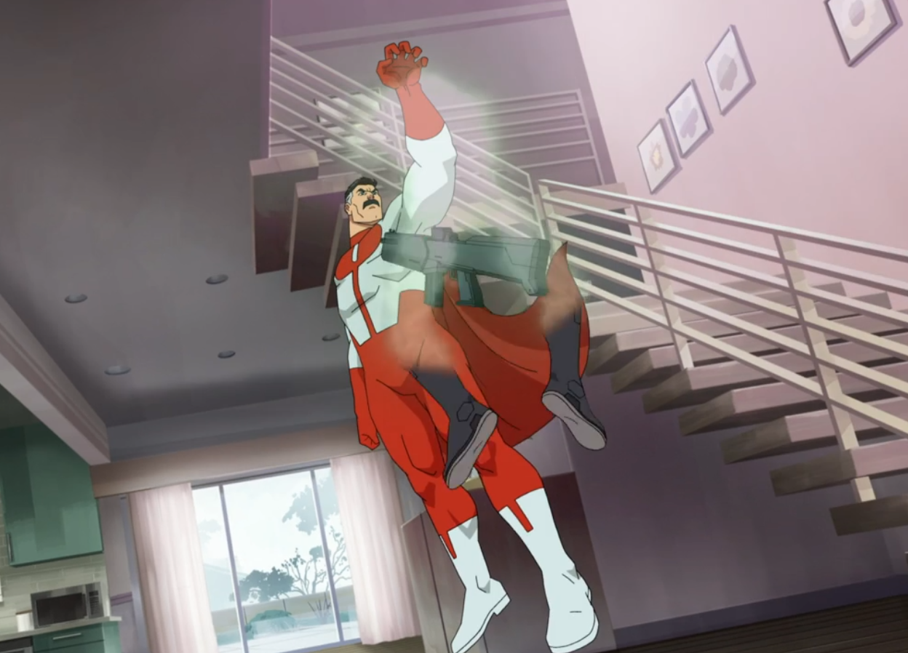

Quartier Général de la GDA
Vous êtes dans le cœur du QG de la GDA. Les informations critiques sont protégées. Certaines menaces ne sont pas visibles à l'œil nu. Inspectez attentivement.
Indice: Les secrets de Cecil sont souvent consignés, pas seulement dits. Des éléments peuvent être cachés à la vue de tous. Utilisez vos outils d'inspection (F12).